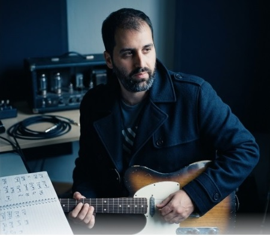

Entendé lo que tocás.
Dejá de memorizar dibujos en el mástil. Empezá a escuchar, entender y tocar la música que realmente te gusta — blues, rock, funk, jazz o fusion — con un método que conecta tu oído con tus manos.

¿Te suena familiar?
Aprendiste escalas. Memorizaste acordes. Practicaste posiciones durante meses. Pero cuando te sentás a improvisar, hacés siempre las mismas frases. Cuando cambia el tono, te perdés. No es que no practiques: es que aprendiste dibujos, no música.
El problema no sos vos. Es cómo te enseñaron a aprender guitarra.
Las posiciones no son el problema.
Depender solo de ellas, sí.
Las posiciones son un mapa. Sirven para ubicarte. Pero un mapa no te enseña a viajar — solo te muestra caminos posibles.
El problema aparece cuando dependés exclusivamente del mapa y dejás de escuchar hacia dónde vas.
Mi método hace lo contrario a lo que estás acostumbrado: en vez de darte más dibujos para memorizar, entrena tu oído para que empiece a guiar tus manos.
Cuando el oído guía, no hace falta memorizar nada. Simplemente sabés qué tocar.
Un mismo método.
Todo conectado.
No separo la música en materias sueltas. Todo lo que tocás — un blues, un tema de funk, una improvisación de rock — nace del mismo lugar.
Estilos que amás
Blues, rock, funk, jazz, fusion.
Armonía
Entender los acordes.
Melodía
Crear frases con sentido.
Ritmo
Que todo respire y groovee.
Oído
La base de todo el método.
Libertad para tocar
No aprendés recursos sueltos. Aprendés cuándo, cómo y por qué usarlos — en la música que realmente querés tocar.
Lo que cambia cuando entendés lo que tocás
- Memorizás posiciones.
- Dependés de diagramas.
- Improvisás siempre igual.
- Aprender canciones te lleva demasiado tiempo.
- Entendés lo que tocás.
- Comprendés cómo funciona la música.
- Improvisás con intención.
- Aprendés canciones más rápido.
Esto es lo que vas a poder hacer
- Improvisar con confianza real, no en piloto automático.
- Entender por qué un acorde funciona y elegir el siguiente con criterio.
- Mover cualquier idea a cualquier tonalidad, sin quedarte trabado.
- Sacar canciones de oído con mucha más facilidad.
- Crear tus propias frases, en vez de repetir las de siempre.
- Acercarte, de verdad, al sonido de los guitarristas que te inspiraron.
Clases hechas a tu medida
Individuales
No competís por atención en un grupo. Toda la clase es sobre vos.
Online o presenciales
Como te resulte más cómodo, sin perder personalización.
Personalizadas
A tu nivel, tus gustos musicales y tus objetivos reales.
Con seguimiento
Ejercicios pensados para vos y feedback real sobre tu progreso.
Una biblioteca completa para entender lo que tocás, a tu ritmo
Accedé a clases grabadas organizadas en dos grandes bloques — dos caras de un mismo método.
Aplicación musical
Cómo suenan el blues, el jazz, el funk y el rock cuando entendés lo que estás haciendo.
Fundamentos
Armonía, melodía, ritmo y oído: el porqué detrás de cada sonido.
Por qué enseño así
Yo también aprendí memorizando posiciones. Sabía mover las manos, pero no entendía lo que estaba pasando debajo de lo que tocaba.
Cuando empecé a entrenar el oído en serio, todo cambió — y ahí entendí qué era lo que realmente le faltaba a la mayoría de los guitarristas, incluido yo.
Por eso hoy no enseño para que memorices más rápido. Enseño para que vos también empieces a escuchar lo que tocás, y puedas usarlo en la música que realmente te gusta — sin depender de un diagrama.
Lo que dicen mis alumnos
"Después de mucho tiempo buscando, finalmente di con Joaquín y estoy aprendiendo música como se debe aprender."
— Alejandro"Cada clase abre la cabeza y expande el vocabulario musical. La metodología se adapta a cada alumno."
— Brian Oropeza"Muy buenas sus clases. Un genio que lo da todo para transmitirlo a sus alumnos."
— Diego"Excelente profesor, con mucha paciencia. Guía clara y gran guitarrista."
— Francisco"Paciente y súper amable con niños. Se adapta a lo que sus estudiantes están buscando."
— CeciliaTodo lo que quizás te estés preguntando
¿Sirve si soy principiante total y nunca toqué guitarra?
Sí. El método se adapta a tu nivel — empezamos por donde estés parado hoy.
¿Y si soy intermedio y ya sé varias escalas y acordes?
Mejor todavía. Vas a entender por primera vez por qué funciona todo lo que ya sabés tocar.
¿Tengo que saber leer partituras o teoría musical?
No. Trabajamos de oído primero. La teoría, si aparece, siempre está al servicio de lo que estás escuchando.
¿Las clases son online o presenciales?
Ambas modalidades están disponibles, según lo que te resulte más cómodo.
¿Con qué frecuencia son las clases?
Lo definimos juntos según tu disponibilidad y objetivos — lo hablamos por WhatsApp.
¿Necesito una guitarra en particular?
No. Cualquier guitarra eléctrica o acústica sirve para empezar.
¿Puedo elegir qué estilo aprender (blues, rock, funk, jazz)?
Sí. De hecho es parte del método: trabajamos sobre la música que a vos te gusta escuchar.
¿Cuánto tiempo tarda en notarse un cambio?
Depende de cada alumno, pero la mayoría empieza a notar diferencias en su forma de escuchar y tocar desde las primeras semanas.
¿Esto reemplaza aprender escalas y acordes?
No los reemplaza — cambia el rol que cumplen. Dejan de ser un fin en sí mismos y pasan a ser herramientas al servicio de tu oído.
¿Hay un programa grabado que pueda comprar directamente, sin clases particulares?
Sí. El aula virtual ya está disponible con clases grabadas y contenido premium. Podés entrar al aula desde el botón de esta página.
¿Cómo empiezo?
Escribime por WhatsApp contándome tu nivel actual y qué te gustaría lograr. A partir de ahí vemos juntos el mejor camino.
¿Cuánto cuesta?
Depende de la modalidad y frecuencia que elijamos. Charlémoslo por WhatsApp así te armo una propuesta a medida.
No necesitás memorizar más.
Necesitás empezar a entender.
No importa si sos principiante o si ya llevás años tocando. Si sentís que hay un techo invisible que no podés cruzar, no es falta de talento. Es falta de un método que conecte tu oído con tus manos.